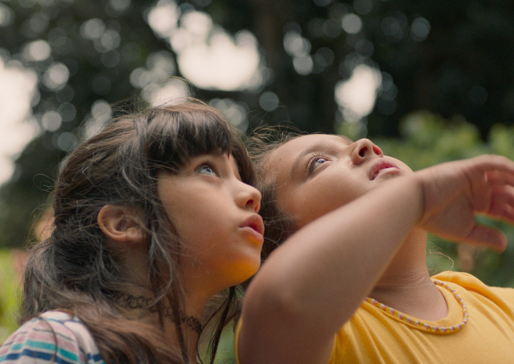

“Foi um amadurecimento gigante sobre luto e morte”, diz atriz mirim de A Natureza das Coisas Invisíveis

Longa que trata do luto na infância estreia nos cinemas dia 27 de novembro, dentro da Sessão Vitrine Petrobras
O filme A Natureza das Coisas Invisíveis chega aos cinemas brasileiros no dia 27 de novembro, pela Sessão Vitrine Petrobras, trazendo à tona um tema tão complexo quanto urgente: como as crianças lidam com a morte antes mesmo de saber nomeá-la. Dirigido por Rafaela Camelo, o longa acompanha duas meninas que se encontram em um hospital — espaço onde o fim da vida se anuncia de forma silenciosa e inevitável.
As protagonistas Glória e Sofia, interpretadas por Laura Brandão e Serena, vivem um verão de descobertas profundas sobre amizade, despedidas e a própria noção de finitude. As duas atrizes foram reconhecidas com o Prêmio de Melhor Interpretação no Festival Mix Brasil de Cultura da Diversidade, o maior evento LGBTQIA+ da América Latina. O filme também saiu do festival com o Coelho de Ouro, prêmio de Melhor Longa-Metragem do Júri.
Infância, luto e invisibilidades
O longa parte de uma realidade pouco discutida: no Brasil, 1,3 milhão de crianças já perderam um dos pais ou alguém que dividia o domicílio, segundo dados recentes. A perda precoce aumenta riscos de ansiedade, depressão, dificuldades escolares e impactos emocionais que se estendem por toda a vida.
Rafaela Camelo transforma essa discussão em cinema com enorme delicadeza. Para ela, o coração do filme está na força das relações intergeracionais:
“O ponto de maior conexão é justamente o encontro entre mães, avós e crianças. É um universo feminino que sustenta e acolhe.”
As crianças falam — e sentem
Laura e Serena dão ao filme uma força rara. Sensíveis, espontâneas e profundamente conectadas ao material, elas ajudaram a moldar a própria cena, como revela a diretora:
“Elas fecharam o roteiro com suas ações genuínas. A forma de olhar, de se mover, de reagir… Trouxeram autenticidade para a história.”
As atrizes também reconhecem o impacto emocional do processo:
Serena conta:
“Foi um amadurecimento gigante sobre o luto e sobre a morte. Aprendi a lidar melhor com essas coisas.”
Laura completa:
“Esse filme foi um aprendizado.”
Um convite para enxergar o invisível
O longa acompanha as meninas enquanto elas tentam, juntas, compreender o que está prestes a lhes ser tirado. E quando a despedida se torna inevitável, o grupo — mães, filhas e bisavó — segue para um refúgio no interior de Goiás, onde vive os últimos dias de um verão que marcará para sempre suas memórias.
A Natureza das Coisas Invisíveis reconhece nas crianças a capacidade de perceber o fim — mesmo antes das palavras — e celebra a amizade como espaço de acolhimento e continuação.
Ficha Técnica
A NATUREZA DAS COISAS INVISÍVEIS (Brasil, 2025 — 90 min) Gênero: Drama
Sinopse
Glória, 10 anos, passa as férias no hospital onde a mãe trabalha como enfermeira. Lá conhece Sofia, que acredita que o agravamento da saúde da bisavó é culpa da internação. Unidas pelo desejo de escapar daquele ambiente, as duas encontram conforto uma na outra. Quando a despedida se aproxima, mães e filhas seguem para o interior de Goiás para viver os últimos dias de um verão que ficará para sempre na memória.
Elenco
Laura Brandão, Serena, Larissa Mauro, Camila Márdila, Aline Marta Maia
Equipe
Direção e roteiro: Rafaela Camelo Direção de fotografia: Francisca Sáez Agurto Montagem: Marina Kosa, Rafaela Camelo Música: Alekos Vuskovic Sound Design: Lucas Coelho Direção de Arte: Sarah Noda
Produção: Daniela Marinho, Rebeca Gutiérrez Campos, Otavio Chamorro, Rafaela Camelo Produção executiva: Heloísa Schons, Juliana Melo, Isabella Jacob Pinto, Daniela Marinho, Fred Burle, Rebeca Gutiérrez Campos